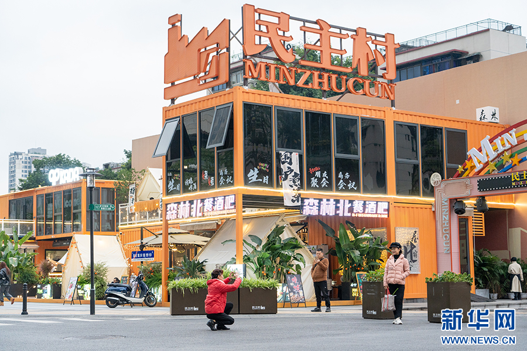
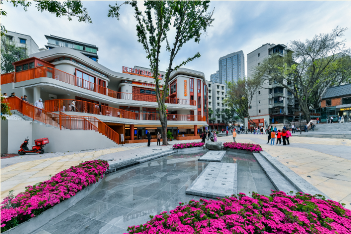
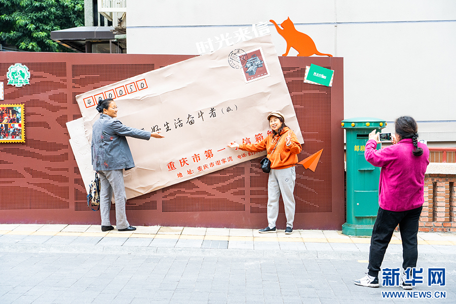
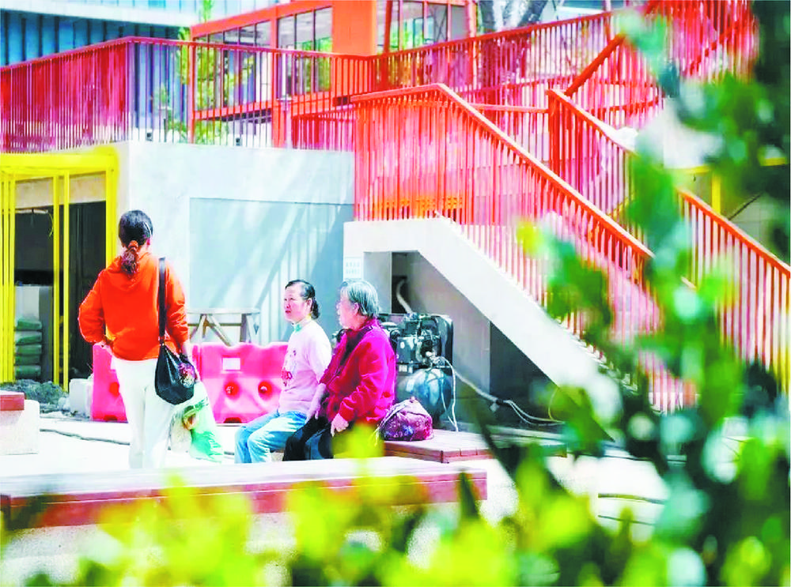
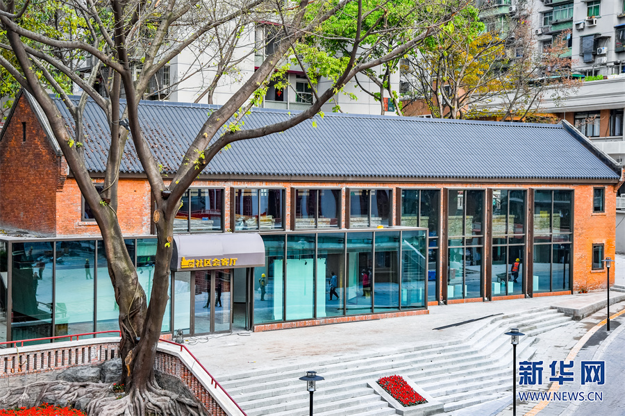
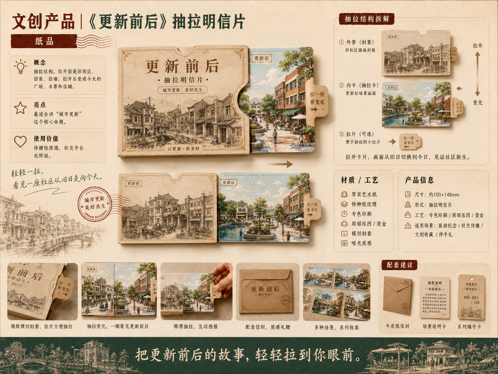
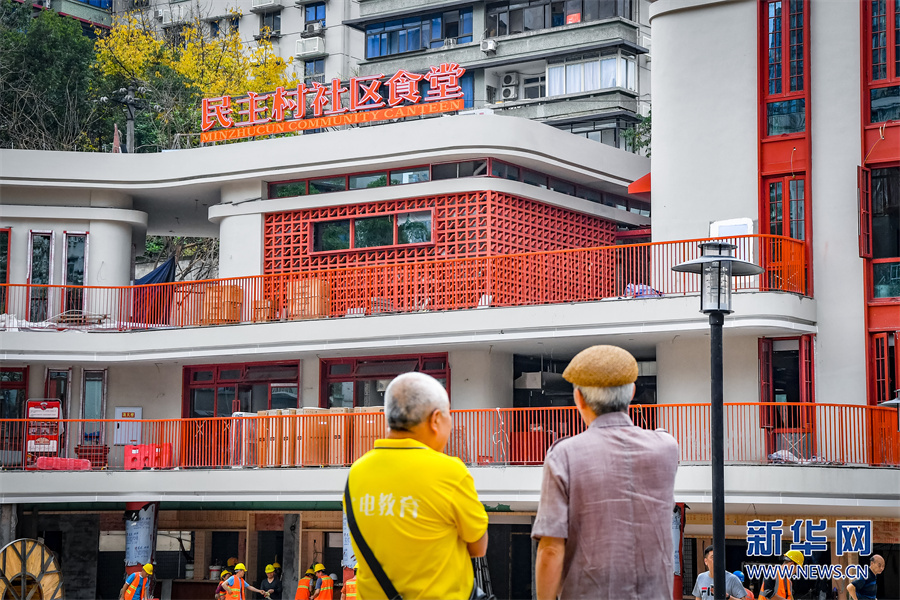

01
一号信箱
记忆、投递、互动、社区治理与公共参与。

项目定位
民主村的设计价值，不在抽象的“重庆感”，而在具体的“民主村感”：一号信箱的独特记忆、苏式红砖建筑的街区表情、建设渠承载的更新隐喻，以及院坝与小店延续的社区烟火。
本案以“壹号民主村 / NO.1 DEMOCUN”为品牌名称，把民主村塑造成一座可被逛、可被用、可被收藏、可被继续共创的生活博物馆。
页面与产品都从一号信箱、红砖建筑、建设渠、院坝生活出发，让“更新故事”成为可看见、可触摸、可带走的日常接口。

记忆、投递、互动、社区治理与公共参与。

老厂老院、苏式专家楼、会客厅与工业肌理。

从旧排洪渠到新公共空间的流动更新隐喻。

黄葛树、街坊邻里、巧匠坊、小店与市井烟火。
Logo 建议以数字“1”为主骨架，加入信箱投递口切口、红砖砖缝节奏与建设渠水波线。整体不过度复古，介于社区导视和生活品牌之间，便于店招、包装、徽章、导览图与数字媒体统一应用。

一号信箱视觉系统
LOGO / COLOR / APPLICATION砖缝、水波、邮戳、楼号牌、手写箭头、窗框投影。
复古工业底，温暖社区感，轻设计感。
红砖与楼号、一号信箱、建设渠与院坝人物，由水波线串联。
五条产品线分别承担入口传播、视觉识别、更新叙事、居民日常与联动运营，既能首轮商品化落地，也为后续季节版、活动版和联名版预留空间。
入口、打卡、传播。
识别、收藏、场所感。
更新隐喻、轻量产品、流动感。
居民日常与社区情绪价值。
小店联名、活动运营、礼盒整合。
展示区已按文档的五条产品线补全。点击任一产品可切换上方大图，筛选可按“一号信箱、红砖建筑、建设渠、院坝生活、共创联动”快速查看。
一号信箱线
 01
01一号信箱线
 02
02一号信箱线
 03
03一号信箱线
 04
04一号信箱线

05一号信箱线
 06
06红砖建筑线
 07
07红砖建筑线
.png) 08
08红砖建筑线
 09
09红砖建筑线
 10
10红砖建筑线
 11
11建设渠线
 12
12建设渠线
 13
13建设渠线
 14
14建设渠线
 15
15建设渠线
 16
16院坝生活线
 17
17院坝生活线
 18
18院坝生活线
 19
19院坝生活线
 20
20院坝生活线
 21
21共创联动线
 22
22共创联动线
 23
23共创联动线
 24
24共创联动线
 25
25共创联动线
陈列采用“小型社区邮局 + 红砖档案架 + 慢逛地图台”的组合：入口设置一号信箱装置和盖章台，中段陈列红砖建筑线与建设渠线产品，尾端结合小店护照、联名周边与综合礼盒形成二次购买。

Conclusion